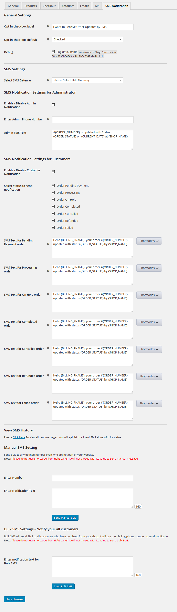

SMS Notification for WooCommerce ( Version: 1.0 )
- created: 14/12/2016
- by: Repute Infosystems
- email: info@reputeinfosystems.com
SMS Notification for WooCommerce plugin sends SMS updates to both admin and customers while placing order with your website. SMS Notification for WooCommerce is just another wordpress plugin which you can install and manage just like other wordpress plugins.
SMS Notification for WooCommerce plugin integrates your order and Nofication with SMS into a single process. You can send SMS to administrator as well as customers immediately after placing Order with your shop via woo commerce.
Key Features
- Send SMS to customers and site administrator immediately after placing order with your website.
- Send SMS notification everytime while update of order status.
- Each order status has its own notification message.
- Three major SMS Gateway Supported - Twilio, Clickatell, Nexmo
- Facility to view complete SMS history along with its status.
- Facility to send Manual SMS. - Send SMS anybody even who is not part of your site
- Send Bulk SMS
Requirements
- PHP version 5.2.4 or greater
- WordPress 3.5 or greater
- WooCommerce 2.0.20 or higher
Installation And Activation
You can install plugin either of these two methods.
1) New install via FTP
a. Download the plugin from CodeCanyon, and extract it. You should find a directory reputesms.
b. In your WordPress installation, upload reputesms to wp-content/plugins/
c. Activate the "SMS Notification for WooCommerce" plugin through the Plugins menu from WordPress admin panel.
2) New install via the WordPress Uploader
a. Download the plugin from CodeCanyon
b. Log in to your WordPress admin panel
c. go to Plugins -> Add New -> Upload
d. Click on choose file and browse the download package from CodeCanyon. When the plugin uploads successfully, click on Activate Plugin link.
After activating the plugin, Go to "WooCommerce" and then go to "Settings" page. You will see SMS settings under "SMS NOTIFICATION" settings.

SMS Configuration
Configuration for SMS will take just 5 minutes with WooCommerce.
To configure SMS settings, Please Go to Settings => SMS NOTIFICATION.
in "General Settings" section you will get Opt-in checkbox label which will show text on the checkout page of your website. You can also decide that you want to check that checkbox defaultly or not.
with Debug Errors, Debug any errors which is generated from SMS gateway. We recommended for best performance, please only enable this option if you experience any issue with the configuration.
SMS Notification Settings for Administrator: You can also enable/disable to notify site administrator as well as customers. If you want to send notification to site administrator, you just need to enter Administrator's phone number and notification text. In phone number, Please add your country code and without including space and dash.

SMS Notification Settings for Customers: Send SMS updates to your customers while placing new order with your website as well as when their order status is updated, Customer will be notified only if they have selected to get SMS Updates on checkout page and entered their Billing Phone number.
Status SMS Text You can manage each of woo-commerce order status' notification text.
Use Message Shortcode - You can use shortcodes on SMS text. This will set value dynamically when SMS will be sent. you can user your site name, order number, order status, order account, order date, order items, billing first name, billing last name, billing email addresss, current date and time.
SMS Gateways
SMS Notification for WooCommerce supports three types of SMS gateways:
Twilio Configuration
Twilio SMS Configuration
To send SMS with Twilio, you need to configure your account with this plugin. Get your required details from Twilio and enter the Twilio Account SID, Twilio Authentication Token and Twilio From Number into the text boxes on the twilio settings.
Clickatell Configuration
Clickatell SMS Configuration
To send SMS with Clickatell, you need to configure your account with this plugin. Get your required details from Clickatell enter the Clickatell Username, Clickatell Password, Clickatell API ID and Clickatell From Name into the text boxes on the Clikatell settings.

Nexmo Configuration
Nexmo SMS Configuration
To send SMS with Nexmo, you need to configure your account with this plugin. Get your required details from Nexmo enter the Nexmo API Key, Nexmo API Secret and Nexmo From Name into the text boxes on the Nexmo settings.
View SMS History
SMS Notification for WooCommerce plugin also provides facility to view complete history of sent SMS along with its status from your site.
Send Bulk SMS
SMS Notification for WooCommerce plugin provides facility you to Send BULK SMS from selected SMS Gateway. It will send SMS to those users who has placed order with your site.Users will be notified only if he checked for SMS notification from frontend checkout page. You can use this feature for advertise your shop, can notify for new products or product on sale, can send Promo or Coupon codes etc.
Sources & Credits